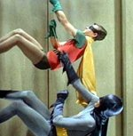
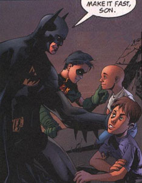
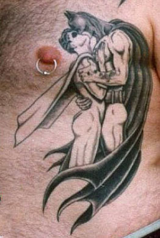
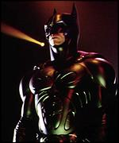
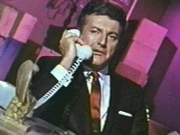
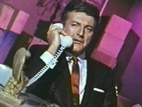

|
Batman
Batman's earliest uniform was little more than a skin tight, candy-colored leotard which left little to the imagination. Instead of a frilly tutu, there was a utility belt. This ensemble was further complimented by long, sweeping cloakery and a bulging codpiece. Yes, the costuming was all very dandy, and it further cemented an unspoken connection between fruity drama-queen acrobatics and lead actor Adam West's propensity for high camp. Batman the comic, Batman the television program, Batman the animated cartoon and Batman the major motion picture series all cheerfully subscribe to characteristics attributed to male homosexual culture across the globe. Batman's eagerness to indulge in wrestling or full contact fisticuffs during hand-to-hand combat easily reveals repressed queer intentionality similar to that exhibited by tightly-wound homosexual delinquents who substitute violence for intimacy. Batman's lack of commitment to women, specifically his inability to maintain long-term, close relationships with female partners, is a recurrent theme. Finally, there's the constant presence of lifelong companion Robin, the boy wonder. They work together, they play together. They slide down poles and try on different outfits. Superhero crime fighters often assume secret identities which imply they're firmly wedged in the closet with mom's lipstick, but Batman and Robin are a truly a dynamic duo. Both conceal vast inner worlds of wrenching conflict from public view. When one considers Batman came into creation during a time in American history when homosexuality was illegal (or a curable mental illness), further credibility to these accusations is readily sustained. The most probing, penetrating, namblariffic analysis of Batman was originally published in 1954. The Seduction of the Innocent outlined Bellevue Hospital psychiatrist Fredric Wertham's hypothesis that Batman's fraternization with Robin was a daddy-boy relationship, an adolescent-with-adult "Ganymede-Zeus" narrative device operating at harmful, subconscious levels on America's youth. Wertham's initial essays seized the comics industry with panic and embarrassment as he drew more and more direct links between superheroes, gayness, and juvenile delinquency. Wonder Woman came under fire for hating men and being plainly lesbian. He labeled the union of Batman and Robin the "wish dream of two homosexuals living together". From The Seduction of the Innocent:
Contemporary director Joel Shumacher has been universally applauded by gay groups for further homoeroticising the Batman film franchise by adding to the costumes of Val Kilmer and George Clooney a set of pert nipples, firmer buttocks, and an extended, inflatable codpiece which more or less resembles a grocery basket overstuffed with bananas. If you're a University student who might like to develop a dissertation which examines homosexual aspects of Batman, be cautioned that your academic output might be limited in scope. Journalists, television producers, content providers, and Web sites are regularly denied copyright access by DC Comics if the angle of your story involves gayness. Nevertheless, parody and pop culture analysis continues unabated. In 1996, Robert Smeigel and J.J. Sedelmaier introduced America to superheroes Ace & Gary: The Ambiguously Gay Duo. They fight crime while piloting a dynamic supervehicle shaped like an enormous penis. As they battle evil-doers, Ace & Gary pretzel themselves together into suggestive, homoerotic configurations and pat each other on the ass. The initial cartoons were yanked by censors of the Dana Carvey variety show, but The Ambiguously Gay Duo later found a home on Saturday Night Live. RealAudio: Batman responds to allegations that he and Robin are gay.
Timeline
|
 The
sexual orientation of America's premiere caped crusader has been a point of
flaming contention for well over fifty years. For some people, witnessing a
cameo by
The
sexual orientation of America's premiere caped crusader has been a point of
flaming contention for well over fifty years. For some people, witnessing a
cameo by